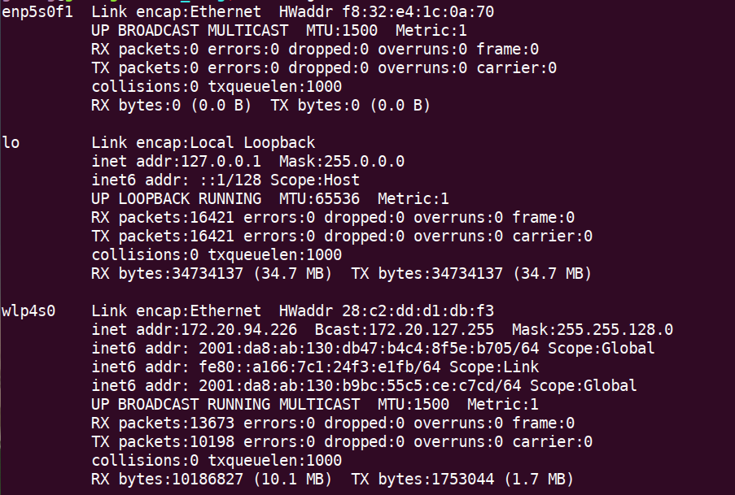
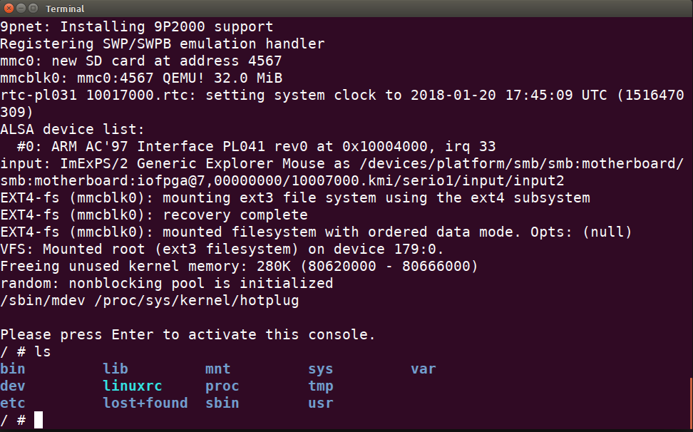
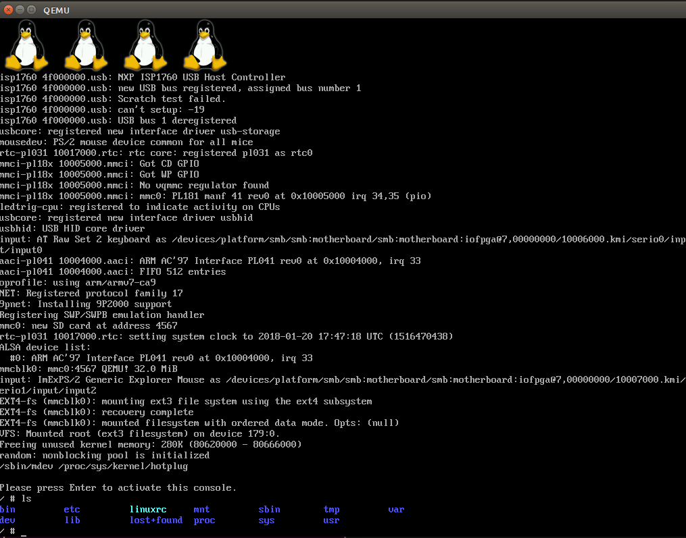

一、背景知识
qemu仿真器
qemu是一套由Fabrice Bellard所编写的模拟处理器的自由软件，它与Bochs，PearPC近似，但其具有某些后两者所不具备的特性，如高速度及跨平台的特性。经由KVM（早期为kqemu加速器，现在kqemu已被KVM替换）这个开源的加速器，QEMU能模拟至接近真实电脑的速度。qemu有两种主要运作模式：
- user mode，亦即是用户模式。QEMU能引导那些为不同中央处理器编译的Linux程序。而Wine及Dosemu是其主要目标；
- System mode，亦即是系统模式。QEMU能模拟整个电脑系统，包括中央处理器及其他周边设备。它使得为系统源代码进行测试及除错工作变得容易。其亦能用来在一部主机上虚拟数部不同虚拟电脑。
交叉编译工具链
与gcc编译器不同的地方是，gcc编译器依赖于硬件平台类型，gcc编译的二进制文件只能在相应的硬件平台上运行，而交叉编译工具链的跨平台特性，使得其可以为不同的硬件平台生成二进制文件。
二、工具准备
下载并解压linux、busybox、u-boot源码
1 | wget https://www.kernel.org/pub/linux/kernel/v4.x/linux-4.4.1.tar.xz |
安装qemu、32位运行环境
1 | sudo apt-get install -y qemu libncurses5-dev zip bc texinfo |
安装交叉编译工具链
1 | sudo apt-get install -y gcc-arm-linux-gnueabi |
三、编译源码
编译linux内核
1 | export ARCH=arm # 指定核心类型 |
拷贝生成文件到指定文件夹中
1 | cp arch/arm/boot/zImage ../extra_folder/ |
四、制作根文件系统
根文件系统的目录结构
- /bin 存放二进制可执行命令的目录
- /dev 存放设备文件的目录
- /etc 存放系统管理和配置文件的目录
- /home 用户主目录，比如用户user的主目录就是
- /home/user，可以用~user表示
- /lib 存放动态链接共享库的目录
- /sbin存放系统管理员使用的管理程序的目录
- /tmp 公用的临时文件存储点
- /root 系统管理员的主目录
- /mnt 系统提供这个目录是让用户临时挂载其他的文件系统。
- /proc 虚拟文件系统，可直接访问这个目录来获取系统信息。
- /var 某些大文件的溢出区
- /usr 最庞大的目录，要用到的应用程序和文件几乎都在这个目录。
对于经常使用Linux系统的读者来说，这些目录大部分应该很熟悉了。不过有几个目录对初学者来说容易混淆，如/bin，/sbin，/usr/bin和/usr/sbin。这里简单介绍一下它们的区别：/bin目录一般存放对于用户和系统来说都是必须的二进制文件，而/sbin目录要存放的是只针对系统管理的二进制文件，该目录的文件将不会被普通用户使用。相反，那些不是必要的用户二进制文件存放在/usr/bin下面，那些不是非常必要的系统管理工具放在/usr/sbin下。此外，对于一些本地的库也非常类似，对于那些要求启动系统和运行的必须命令要存放在/lib目录下，而对于其他不是必须的库存放在/usr/lib目录就可以。
生成busybox运行指令
1 | export ARCH=ARM |
创建文件系统目录
1 | cd _install |
添加/etc/配置文件
1 | git clone https://github.com/mahadevvinay/Embedded_Linux_Files.git ../Embedded_Linux_Files |
修改可执行文件权限
1 | sudo chmod a+x _install/etc/init.d/rcS |
安装modules
1 | cd ../linux-4.4.1/ |
拷贝交叉编译工具链运行库
1 | sudo cp -P /usr/arm-linux-gnueabi/lib/* _install/lib/ |
创建4个tty终端设备
1 | sudo mknod _install/dev/tty1 c 4 1 |
制作根文件系统镜像
1 | dd if=/dev/zero of=a9rootfs.ext3 bs=1M count=32 |
拷贝生成的文件系统到目标文件夹中
1 | cp a9rootfs.ext3 ../extra_folder/ |
五、启动网络支持
工具准备
1 | sudo apt-get install uml-utilities |
查看本地网络链接
1 | ifconfig |
博主的网络连接状况如下:其中第一个是有线网连接，目前尚未联网，第三个是无线网连接，后面将使用这个网络。
建立桥接
1 | sudo atom /etc/network/interfaces |
添加以下内容1
2
3auto br0
iface br0 inet dhcp
bridge_ports wlp4s0
其中 wlp4s0 换成你自己的网络连接名字即可。
使修改立即生效
1 | sudo /etc/init.d/networking restart |
六、启动tftp服务
工具准备
1 | sudo apt-get install tftp-hpa # 客户端软件 |
建立tftp服务器工作目录
1 | mkdir -p /path/to/tftpboot |
设置tftp服务器工作目录
1 | sudo atom /etc/default/tftpd-hpa |
开启tftp服务
1 | service tftpd-hpa restart |
测试tftp服务
1 | touch /path/to/tftpboot/test |
其中ip地址换成你自己的即可，如果当前目录下能够得到test文件，说明成功了。
七、编译u-boot
修改参数配置文件
1 | sudo atom /include/configs/vexpress_common.h |
修改相应部分代码如下1
2
3
4
5
6
7
8#define CONFIG_BOOTCOMMAND \
"run distro_bootcmd; " \
"run bootflash; " \
"setenv serverip 172.20.94.226; " \
"tftp 0x60003000 uImage; " \
"tftp 0x60500000 vexpress-v2p-ca9.dtb; " \
"setenv bootargs 'init=/linuxrc root=/dev/mmcblk0 rw console=ttyAMA0'; " \
"bootm 0x60003000 - 0x60500000; "
其中ip地址换成你自己的即可。
编译源码
1 | export ARCH=arm |
转换linux系统镜像格式
1 | cd tools |
八、测试运行
qemu直接启动
命令行界面1
2
3
4
5
6
7
8
9qemu-system-arm \
-M vexpress-a9 \ # 指定硬件平台
-m 256M \ # 指定内存大小
-kernel /path/to/zImage \ # 指定内核镜像路径
-dtb /path/to/vexpress-v2p-ca9.dtb \ # 指定设备树路径
-sd /path/to/a9rootfs.ext3 \ # 指定文件系统镜像路径
-append "root=/dev/mmcblk0 rw console=ttyAMA0" \#设置启动参数
-nographic \ # 无图形化界面
-smp 4 # 指定4个启动核心数
运行结果
图形化界面1
2
3
4
5
6
7
8
9qemu-system-arm \
-M vexpress-a9 \
-m 256M \
-kernel /path/to/zImage \
-dtb /path/to/vexpress-v2p-ca9.dtb \
-sd /path/to/a9rootfs.ext3 \
-append "root=/dev/mmcblk0 rw" \
-serial stdio \
-smp 4
运行结果
通过u-boot启动
1 | qemu-system-arm \ |